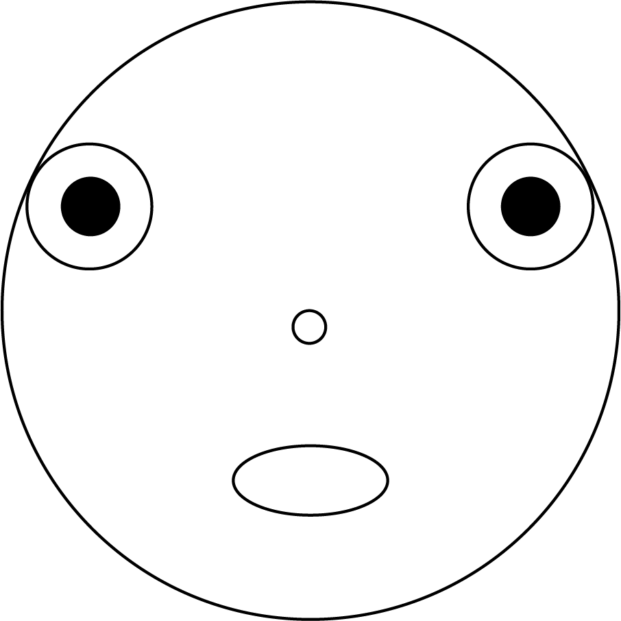

- Open Adobe Illustrator
-
- The document will be 8 x 10 inches and color RGB
-
- Choose Ellipse Tool and draw your main circle (width 3 inches and height3 inches)
-
- Your circle will be in the middle of sheet
-
- Then you will create two circles (WxH: 0.6073 in x 0.6073 in) These will be the eyes
-
- Put them inside of your main circle
-
- Put each circle close to the border of your main circle
-
- Draw a smaller circle (WxH: 0.1589 in x 0.1589 in). This will be the nose
-
- It will be in the middle of your main circle
-
- Next, create 2 circles more (Wxh:0.3036 in x 0.3036 in)
-
- The color of these circles will be black color with white border and each one will be inside and in the center of the eyes.
-
- Finally, create an oval (WxH: 0.751 in x 0.3372 in) and this will be the mouth, it will be below of the nose and in the center too.
-
- Save the file by the name “random guy"
my recreation

Kahla's Recreation

Matthew's Recreation